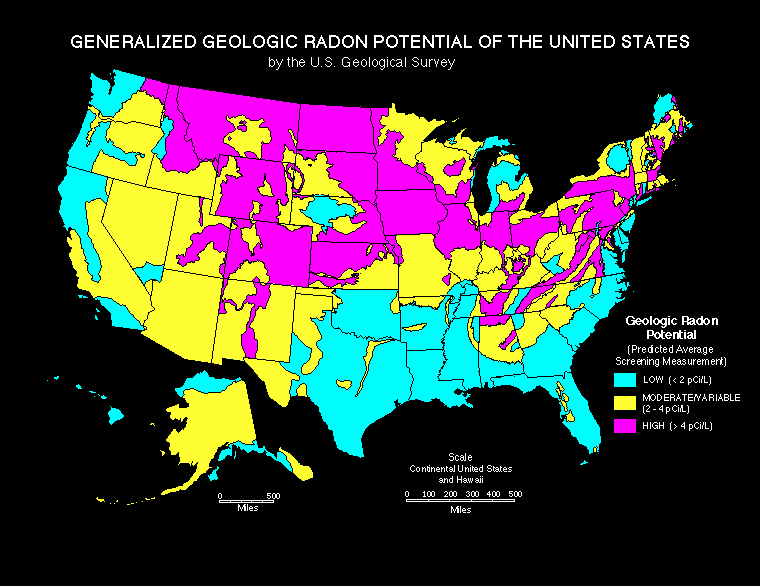

The threefold path of multilevel modeling
EPID 684
Spatial Epidemiology
3/24/2022
Jon Zelner
jzelner@umich.edu
epibayes.io
Agenda
- Worked example of three approaches to multi-level modeling.
- Discussion of Gelman Minnesota radon ☢️ example
Let’s extend the blood pressure model from Merlo et al. to include a risk/protective factor.
- Simulated study where we sample 1000 individuals (\(i\)) from 20 neighborhoods (\(j\)) and measure:
- \(y_{ij}\) is continuous systolic blood pressure (SBP) for individual \(i\) in location \(j\).
- \(x_i \in [0,1]\) is a binary exposure indicating whether the individual gets regular physical exercise.
- \(\beta\) is an increase in \(y_i\) associated with the exposure
- \(\alpha\) is mean SBP in the absence of exposure
How can we deal with the fact that people are clustered within locations?
You have three choices: Which üö™ will you choose?
Door üö™ #1: Ignore clustering and fit a normal GLM
- Pool data across all units, i.e. ignore clustering.
- i.e. fit model \(y_{ij} = \alpha + \beta x_i + \epsilon_i\)
- Is this typically a good idea?
NO!

Complete pooling ignores potential sources of observed and unobserved unit-level confounding.
Full pooling of clustered data violates assumption of independent errors
A fully pooled model:
\[
y_i = \alpha + \beta x + \epsilon_i
\]
- Assumes \(y_i\) is a combination of systematic variation (\(\alpha + \beta x\)) and uncorrelated random noise (\(\epsilon_i\)) where:
\[
\text{i.i.d.} \epsilon \sim Normal(0, \sigma^2)
\]
Your residuals should look like this

Your residuals should look like this

If you ignore clustering (ICC = 0.9)

If you ignore clustering (ICC = 0.9)

If you ignore clustering (ICC = 0.5)

If you ignore clustering (ICC = 0.5)

If you ignore clustering (ICC = 0.25)

If you ignore clustering (ICC = 0.25)

Door üö™ #2: Fit a different model to each cluster
- Unpooled approach:Fit a separate model to each unit (\(j\)), assuming outcomes in each unit are independent:
- Model looks like: \(y_{ij} = \alpha_j + \beta_j x_i + \epsilon_{ij}\)
- Where: \(\epsilon_{ij} \sim N(0, \sigma_{j}^2)\)
More danger!

Totally unpooled models run the risk of overfitting the data, particularly in small samples.
Specific dangers of unpooled models
- Some places may have few observations, making unpooled models impractical
- We may want to allow the effect of an exposure to be consistent across location.
- Will have nothing to say about data from a new location
How would our ideal model split the difference between fully pooled and totally unpooled?
- Encode the assumption that places are similar unless data tell us otherwise.
- Be flexible enough to reflect information in new data without overfitting.
- Give answers equivalent to the fully pooled and unpooled approaches if that is what the data actually suggest.
Door üö™ #3: Partial Pooling üèä!
- Allow effects to vary across clusters, but constrain them to come from the same distribution:
- Model looks like: \(y_{ij} = \alpha + \beta x_i + \epsilon_{i} + \epsilon_{j}\)
- Where: \(\epsilon_{i} \sim N(0, \sigma_{i}^2)\)
- And: \(\epsilon_{j} \sim N(0, \sigma_{j}^2)\)
What does partial pooling get us?
- This approach accommodates variation across units without assuming they have no similarity.
- Allows us to include covariates both about individuals and their spatial context.
- More likely to make accurate out-of-sample predictions than the fully-pooled or unpooled examples.
Imagine you’re in the radon system business
My very own radon mitigation system!
As the soil uranium ☢️ increases, so does baseline county-level radon

Counties with lots of soil uranium seem like a good bet for business

Partial pooling most benefits predictions for places with less data

Light dotted line = full pooling; Light solid line = no pooling; Dark line = partial pooling